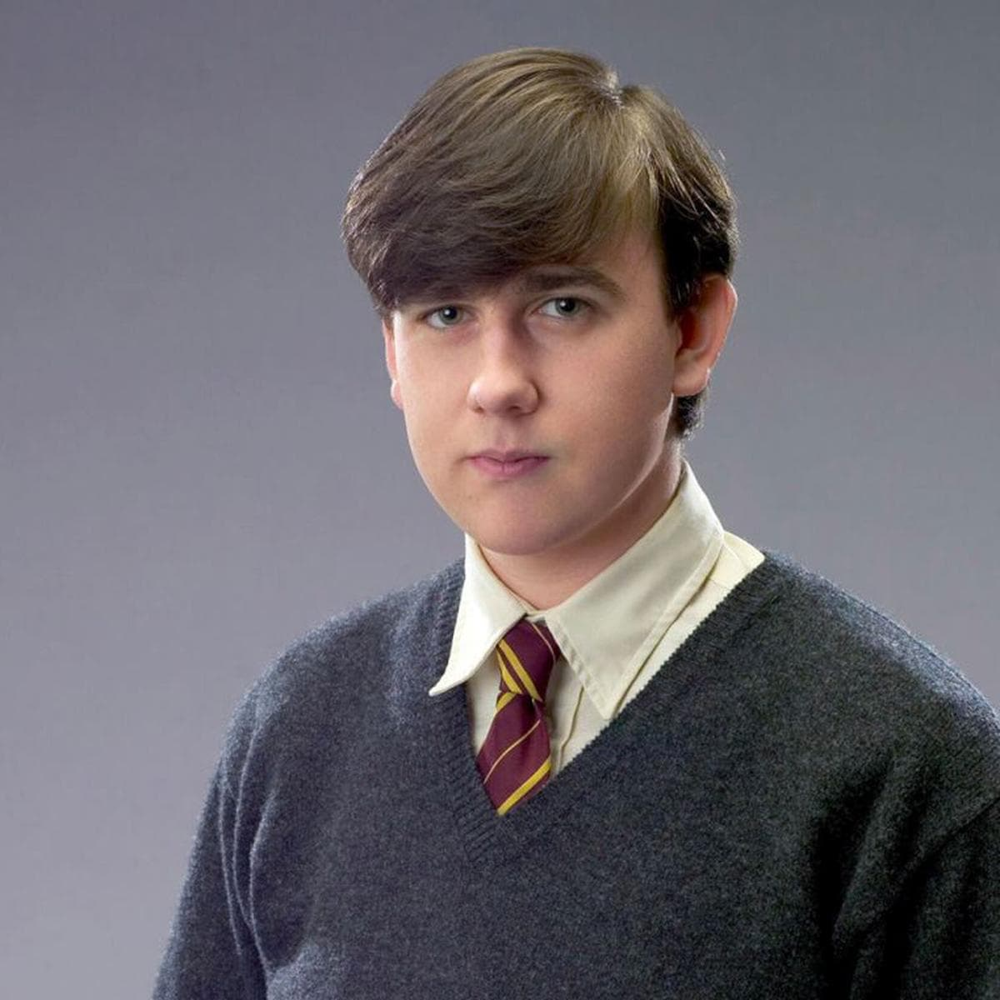
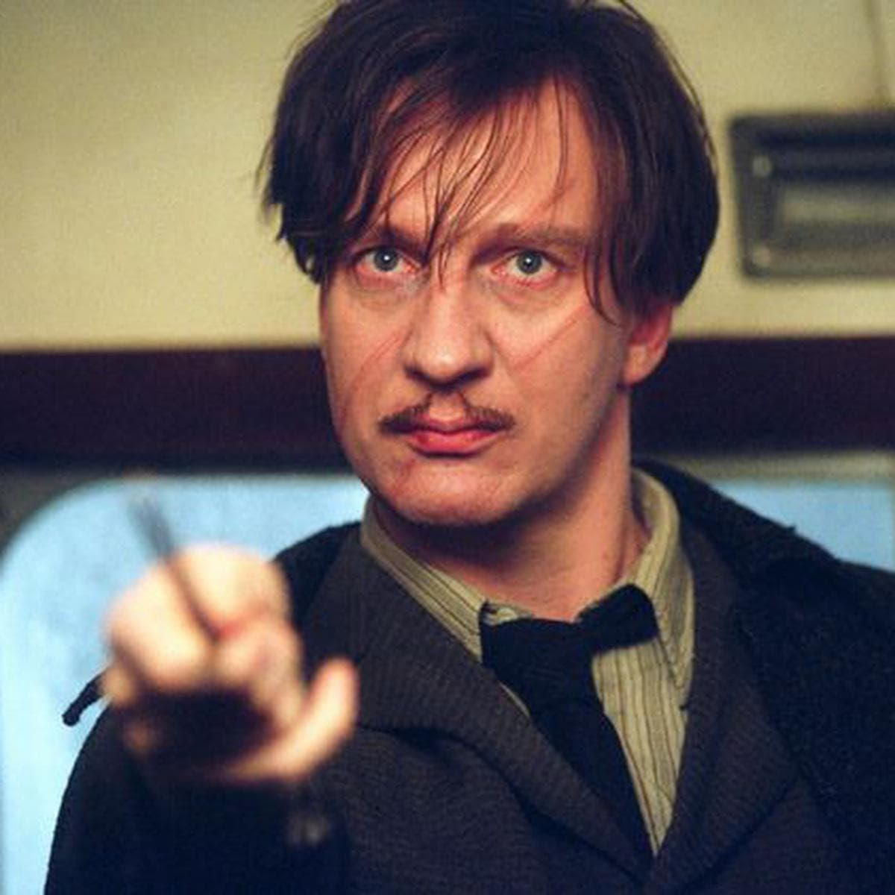
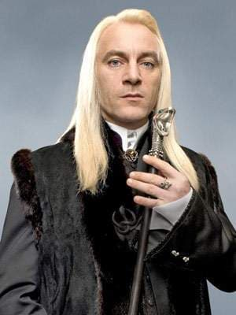
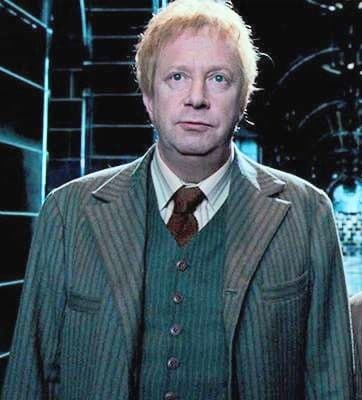
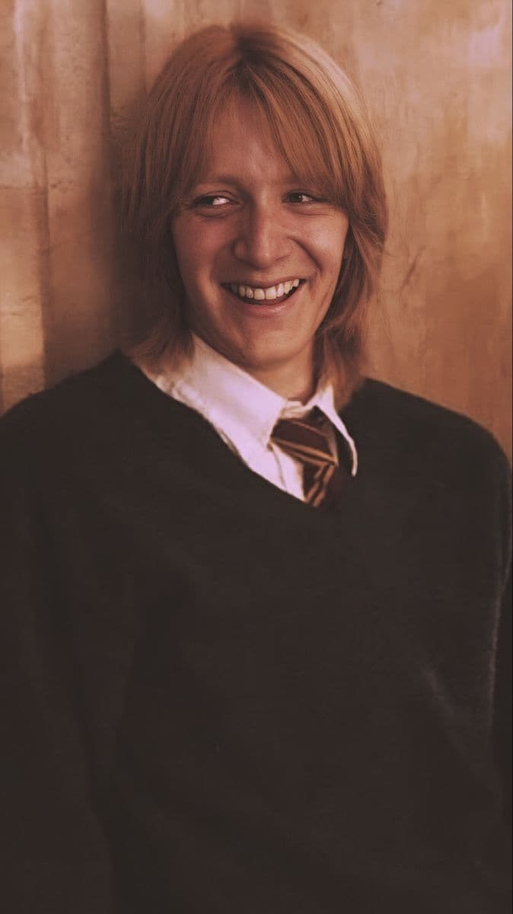
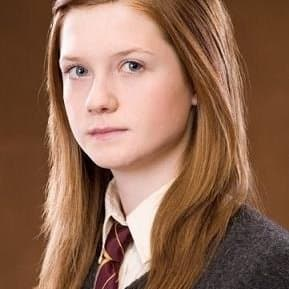
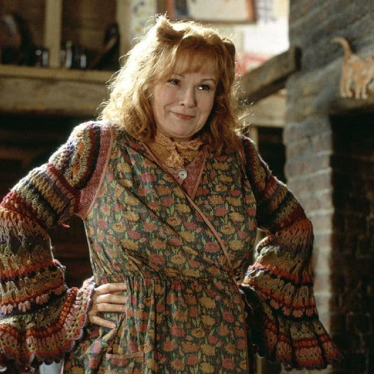
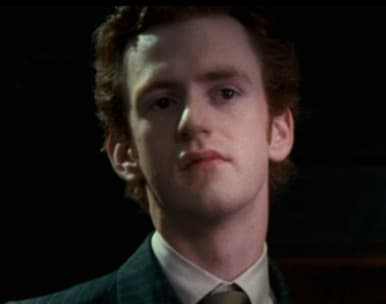

PERSONAJES SECUNDARIOS
Neville Longbottom
Neville Longbottom es un mago sangre pura de origen inglés, y el único hijo de Frank y Alice Longbottom. Se casó con Hannah Longbottom, con quien tuvo una hija: Jessamine Longbottom. Asistió al Colegio Hogwarts de Magia y Hechicería durante el período de 1991-1998, perteneciendo a Gryffindor.
Luna Lovegood
Luna Lovegood es una bruja, la única hija de Xenophilius y Pandora Lovegood. Su madre murió accidentalmente mientras experimentaba con hechizos cuando Luna tenía nueve años y fue criada por su padre, editor de la revista El Quisquilloso, en una casa similar a una torre de ajedrez gigantesca cerca del pueblo de Ottery St. Catchpole en Devon.

Remus Lupin
Era uno de los mejores amigos del padre de Harry, James Potter. Es descrito como un hombre que viste pobremente, de aspecto pálido y enfermizo, y con muchas cicatrices. Su sangre es mestiza y en su niñez fue mordido por el Hombre lobo Fenrir Greyback. Remus acudió al Colegio Hogwarts de Magia y Hechiceria al mismo tiempo que James Potter, Sirius Black, Lily Evans, Peter Pettigrew y Severus Snape.
Lucius Malfoy
Era el marido de Narcisa Malfoy el padre de Draco y abuelo de Scorpius Malfoy, vivía en la Mansión Malfoy, ubicada en Wiltshire. Lucius era un hombre aristocrático, y, además, mortifago, y como tal tenía una obsesión con la pureza de sangre por lo que doctrinó a su hijo Draco con los mismos ideales. Fue fiel a Lord Voldemort, uniéndose a los mortífagos y participó en la Primera Guerra Mágica.
Arthur Weasley
Es un mago de sangre pura al servicio del Ministerio de Magia, así como un miembro de la Orden del Fénix. Él era un firme creyente en la igualdad de todas las personas mágicas y muggles y el patriarca de la Familia Weasley. Arthur se casó con Molly Prewett él y Molly tuvieron seis hijos - Bill, Charlie, Percy, los gemelos Fred y George, y Ron - y una hija, Ginny
Fred Weasley
Es un mago Sangre Pura, un hijo de Molly y Arthur Weasley, hermano de Bill, Charlie, Percy, Ron y Ginny Weasley, y el hermano gemelo de George Weasley. Tanto él como su hermano gemelo eran estudiantes populares, conocidos por su sentido del humor, bromas, y por ser Golpeadores del Equipo de Quidditch de Gryffindor.
George Weasley
Es un mago de sangre pura, hijo de Arthur y Molly Weasley hermano de Bill, Charlie, Percy, Ron, Ginny y el hermano gemelo menor de Fred Weasley. Él y Fred eran estudiantes populares, convirtiéndose en Golpeadores del equipo de Quidditch de Gryffindor en su segundo año.
Ginevra Weasley
Es una bruja Sangre pura, la más joven de los siete hijos de Arthur y Molly Weasley, y la primera mujer en nacer en la línea Weasley durante varias generaciones. Ella y sus hermanos mayores crecieron en la Madriguera en las afueras de Ottery St. Catchpole en Devon.
Molly Weasley
Es una bruja de sangre pura y matriarca de la familia Weasley. Se casó con Arthur Weasley. Molly nació en el seno de la familia Prewett, hermana de Fabian y Gideon Prewett, dos miembros de la Orden del Fénix original.
Percy Weasley
Es un mago Sangre pura siendo el tercer hijo de Arthur y Molly Weasley, menor que Bill y Charlie y mayor que Fred, George, Ron y Ginny Weasley. Asistió a Hogwarts y fue prefecto y Premio Anual.
